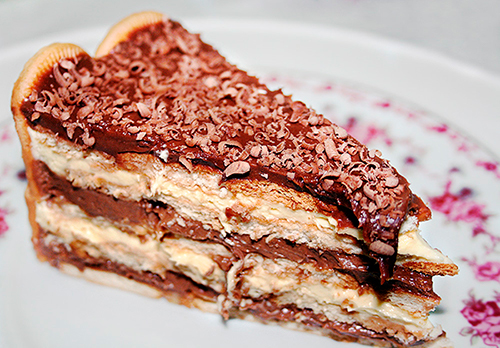

Chocolate trifle

Description
Everyoune loves Chocolate Trifle, but this brazillian inspired desert makes you get a whole new perspective
on it. People will be lining up just to get a bite of this miracle!
Ingredients
Base:
- 1 Package of cornstarch biscuit;
- 1/2 Milk glass;
- 1 (Desert) spoon of cocoa powder.
Chocolate Sauce:
- 1 Can of canned milk;
- 1 Can of cow milk;
- 1 (Desert) spoon of corn starch;
- 2 Yolks;
- 4 Cocoa powder spoons.
Steps
Base:
- In a bowl, mix the milk and the cocoa powder until it's completely dissolved.
- Soak the biscuits in the milk and let it rest.
Chocolate Sauce:
- Mix the egg whites with sugar until you obtain a consistent cream, add milk cream and mix gently.